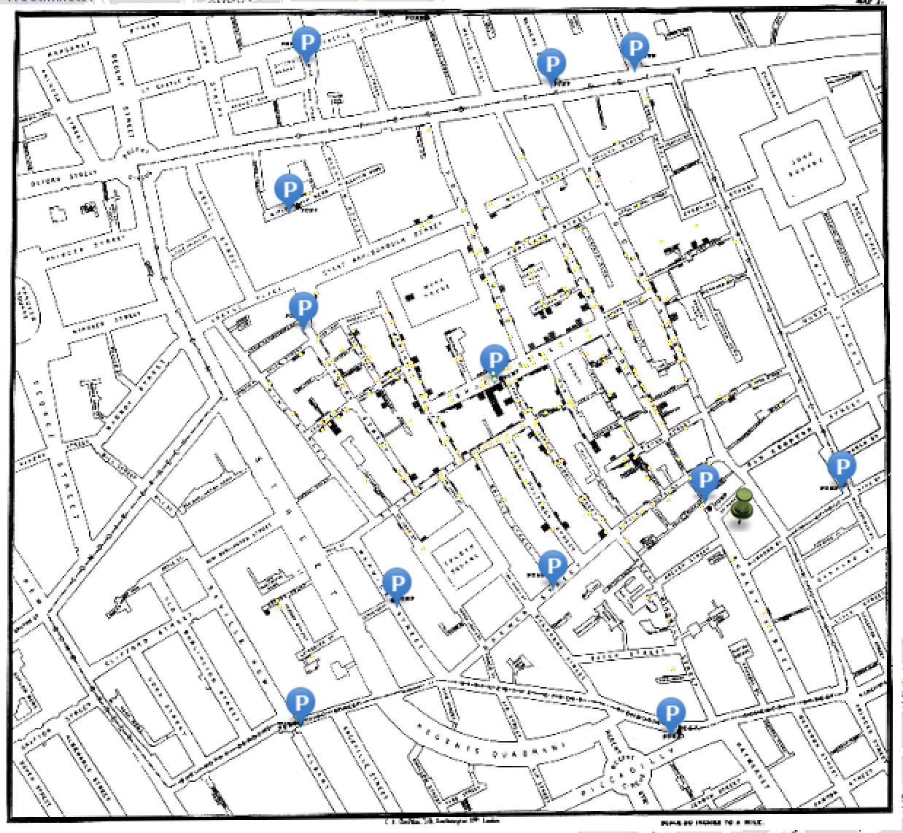
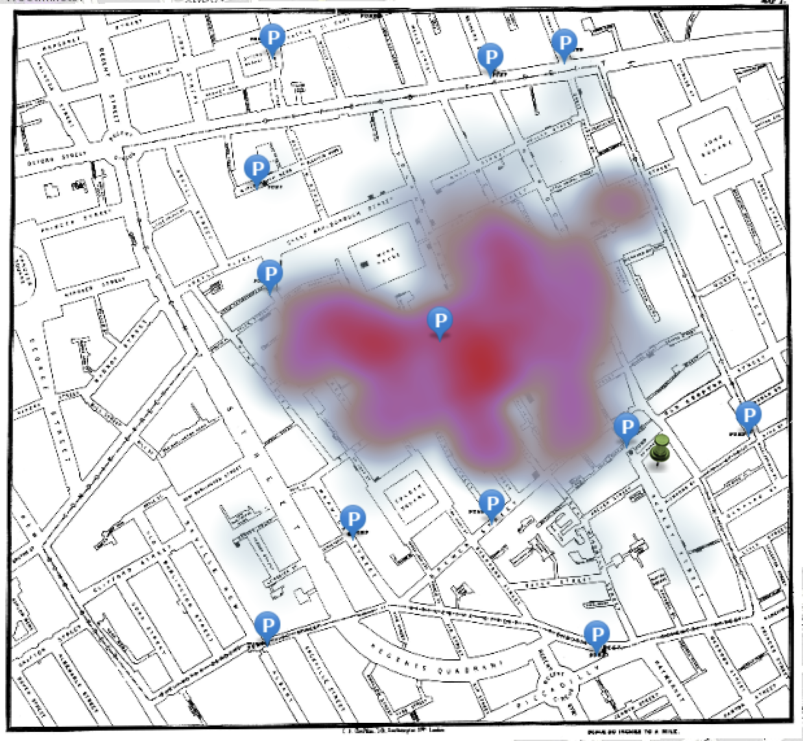
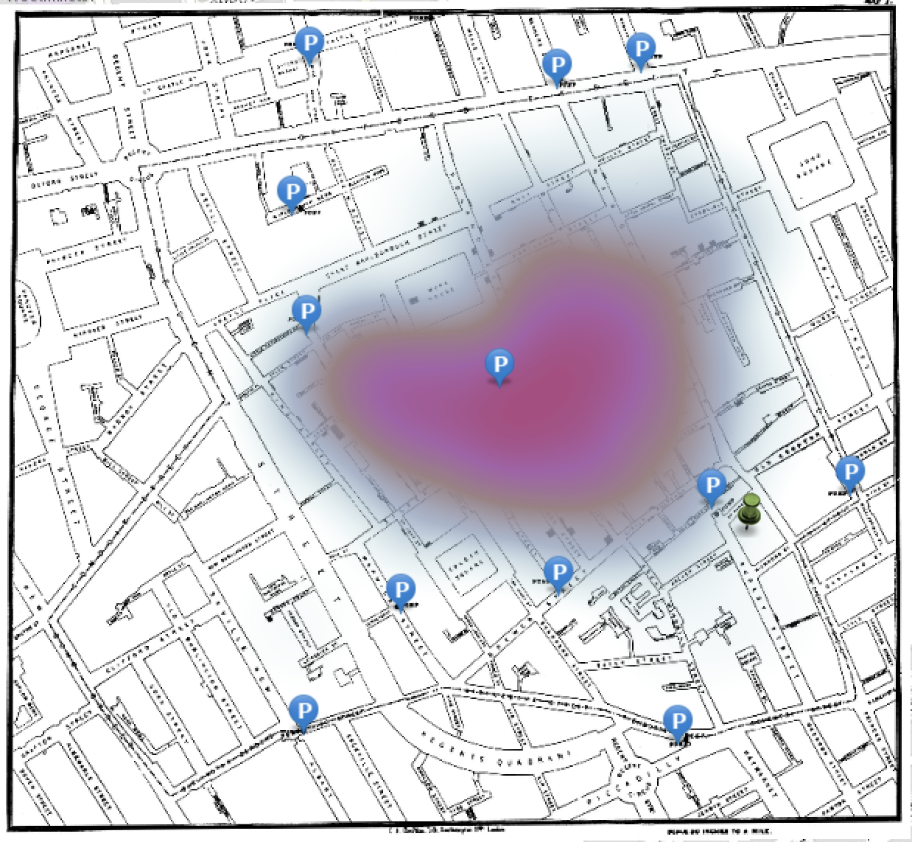

Lab 01 · September 2026
Lab 1 – China in Layers
The question
Where and how many people actually live inside the boundary drawn around Chongqing municipality?
The data
The China map is Esri's "China Layers" teaching map, combining World Countries, China Admin, and World Cities layers. The city population field for Chongqing is sourced from UN_Habitat_2020, a present-day estimate.
The method
For Chongqing, I traced the municipality's outline with the Measurement tool (10–15 clicks) and compared that to the official area figure. I also modified the styles of rivers and roads across China, and bookmarked the location of Shanghai, Beijing, and the Great Wall.
What I found
For Chongqing, my traced area was 82,383.30 km² against an official figure of 82,400 km², a difference of just 16.7 km². Dividing the municipal population (~32 million) by my measured area gives a density of 388.4 people/km². This density is far below the 1,500 people/km² urban threshold, despite Chongqing being commonly described as one of the world's largest cities. The World Cities layer gives a very different population for the same name: 12,479,000, sourced to UN-Habitat, counting the continuous urban area rather than the mostly rural municipality.
Reflections
I put the population sourced from UN-Habitat, 12,479,000, in the caption because it's the number that actually matches the dot layer that accounts for only the actual urban population. The roughly 32 million figure describes something else entirely: the population of Chongqing within its administrative boundary, which contains wide areas of rural villages. If someone is looking at this map without the unit, they would likely assume Chongqing is a dense city of tens of millions, when the municipal density I calculated, 388.4 people/km², is well under the 1,500 people/km² urban threshold.
For the cholera map, the pump conclusion held at two of three settings, but not all three. At the middle and far-right bandwidths, only one pump, the 43 Broadwick Street one, fell inside the hottest band, and it sat nearest the centre both times. At the far-left (smallest) bandwidth, the finding became ambiguous: three pumps landed in the hottest band (52 Rupert Street, 1 Carnaby Street, 43 Broadwick), and while 43 Broadwick was still closest to the centre, the surface no longer pointed at one clear source. That means a density map made by someone else would tell me nothing about which of these three states it was in, since the scale of the heatmap was unknown to me.
| Area of influence | Pumps in the hottest band | 43 Broadwick nearest the centre? | What you would conclude from this map alone |
|---|---|---|---|
| Far left | 3 (52 Rupert Street, 1 Carnaby Street, 43 Broadwick Street) | Yes | At this bandwidth, the surface shows no visible density pattern; only the pump markers are visible on the base map. |
| Middle | 1 (43 Broadwick Street) | Yes | A broad red and purple hot zone covers most of the central blocks, with 43 Broadwick sitting in the core. This map points to 43 Broadwick as the center, but the zone is wide enough that it does not rule out the streets immediately around it. |
| Far right | 1 (43 Broadwick) | Yes | A tighter hotspot peaks directly over 43 Broadwick. This map also points to 43 Broadwick, and the peak looks more sharply defined here than at the middle setting. |



A density map like this could plausibly guide where a public health team should place a mobile testing or vaccination site during an outbreak to tackle where most cases concentrate. If the bandwidth were set too large, it would smooth the entire affected area into a broad zone. If so, medical personnel and officials can not tell where the epicentre of the outbreak is, which means that those most at risk of infection/death might not receive appropriate care.
What this does not show
Since I did the tracing of Chongqing with 15 points, the tracing was not as accurate as the complex boundaries of the official administrative map. Therefore, there was inevitably a slight difference in the estimated area, which leads to an even larger margin of error for the density estimate. Most importantly, what this map does not show is the movement of people between the rural and urban areas of Chongqing. Since the population used here is set to the urban area, it does not account for the number of people commuting and working in Chongqing, nor does it account for the actual urban stress experienced in Chongqing.
AI use: AI-assisted for tidying the HTML in the lab entry, using Claude. I verified it by opening the page on a phone and a laptop and confirming no external resources were added. The analysis, the parameter choices, and the interpretation are my own.